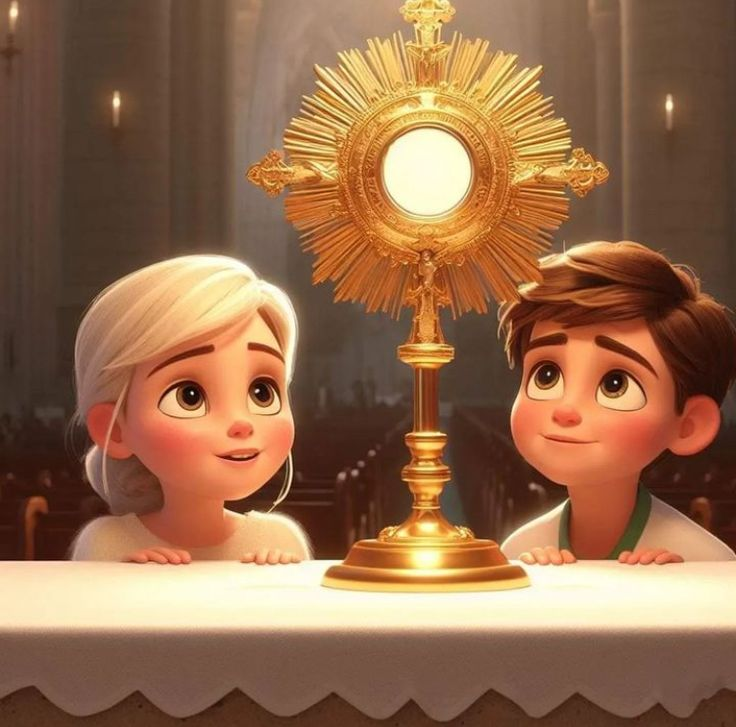
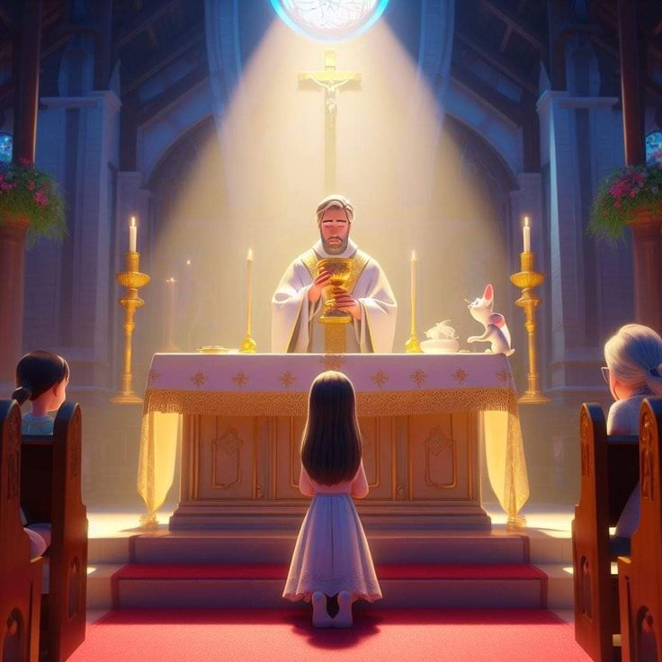

Importance of the Eucharist
The Eucharist matters because it “is an encounter with the person of Christ,” and “love of
neighbor is always grounded in that Eucharistic encounter with Christ the beloved, the person
who longs to unite himself with the human heart in communion”.

The Reality of the Eucharist
-
The Eucharist is not an act of empty religiosity. The risen Jesus is present in the celebration
of the Eucharist. While Christians may argue as to how this takes place (physically, or
spiritually), Scripture teaches that the Eucharist draws us near to Jesus.
-
Jesus himself taught this understanding. Jesus refers to himself as the "living bread that came
down from heaven", stating "whoever eats this bread will live forever; this bread is my flesh
which I will give for the life of the world" (John 6, 51).
-
The centrality of the Eucharist is not to be taken lightly. The Eucharist is so important to the
Christian life that Scripture warns us against "eating the bread and drinking the cup in an
unworthy manner" (1 Corinthians 11, 27). For the early church, the way a Christian participated
in the Eucharist had spiritual, and eternal implications. If one didn't "recognize the body of
the Lord" in the Eucharist (1 Corinthians 11, 29), one unwittingly brought condemnation upon
themselves. Saint Paul even equates weakness, sickness, and death as results of unfaithful
participation in the Eucharist (1 Corinthians 11, 30).
-
The Last Supper was not just a final meal. Jesus institutes a rite whereby Christians live out
their faithful communion to their Lord. This means that the Eucharist is not an optional
discipline for the Christian person. Christ specifically calls his followers to "do this in
remembrance of me" (Luke 22, 19). The act of remembering, in this context, doesn't mean we
merely think of a fond memory, a memory we are in danger of forgetting; rather, "to remember"
is to receive the truth of the Eucharist as a present reality. We remember Jesus in the bread
and wine the same way Christ remembers us in his Kingdom (Luke 23, 42).

Do we have such a view of the Eucharist today? Do we believe that partaking in the Eucharist can
transform our spiritual lives? Or do we see the Eucharist as an act of simple nostalgia? As
followers of Jesus, we are called to recognize the body of Christ in our Eucharistic participation.
Ultimately, if the Eucharist is so serious that Scripture warns against its misuse, then we out to
examine our practice of Eucharistic participation lest we eat and drink unworthily.